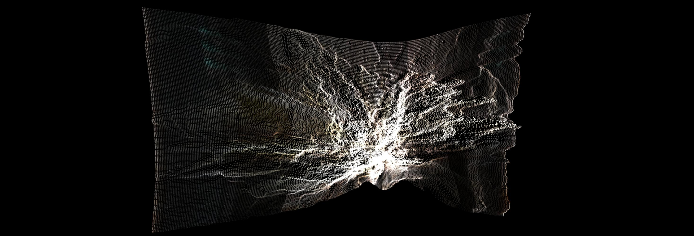

Simbiontes - 2019

Simbiontes es un ‘ecosistema digital’ que incuba en tiempo real, organismos audiovisuales. Cada simbionte producido es una combinación de imágenes y samples sonoras Lo Fi.
Sus patrones de comportamiento se forman leyendo cadenas de ADN de virus biológicos, códigos de virus informaticos, y datos de mi cuerpo, adquiridos mediante sensores biométricos. En su devenir, cada simbionte, va mutando y recombinandose, a la vez que guarda nuevos archivos, que son reutilizados por otros simbiontes.

Como mutaciones de los códigos originales se produjeron obras físicas, con el uso de resina y microchips, que reproducen partes de los códigos presentes en el ecosistema digital.
Esta obra fue realizada con el apoyo de una Beca Creación, otorgada por el Fondo Nacional de las Artes.